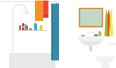
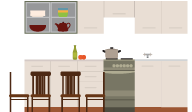
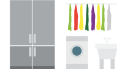
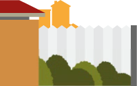

ÁGUA
cuide desse bem.Evite o desperdicio
ÁGUA: UM BEM FINITO
Embora 75% da superficie do planeta seja formada por
água, apenas 25% desse total é doce e menos de 1% pode ser utilizada pelo homem.
Economizar água é uma atitude consciente e benefica a todos, Pequenas mudanças fazem uma grande diferença.
NO BANHEIRO

- Cada minuto a menos no banho equivale a uma economia de 3 a 6 litros.
- Fexar a torneira ao escovar os dentes ou fazer a barba. isso evita o desperdicio de 10 a 20 de água.
NA COZINHA

- Fexe bem a torneira. Ao gotejar,o desperdicio é de mais de 40 litros por dia
- Mantenha a torneira fechada ao ensaboar a louça.
NA ÁREA DE SERVIÇO

- Utize a máquina no máximo 3 vezes por semana e apenas quando estiver cheia.O ciclo de lavagem completo de uma máquina de 5Kg consome 185 litros de água.
- Ao lavar roupas no tanque, mantenha a torneira fechada enquanto ensaboa e esfrega. A economia a cada 15 mim é de 270 litros.
NO QUINTAL

- Varra a calçada em vez de utilizar a mangueira.A economia é de 279 litros de água a cada 15 min.
- Molhe as plantas com regador quando o sol estiver baixo.Assim se evita que a água evapore.
FIQUE ATENTO
Limpe bem a louça antes de iniciar a lavagem.
Reaproveite a água da lavagem da máquina na limpeza de cozinha, banheiros e quintal.
NA lavagem do carro utilize baldes